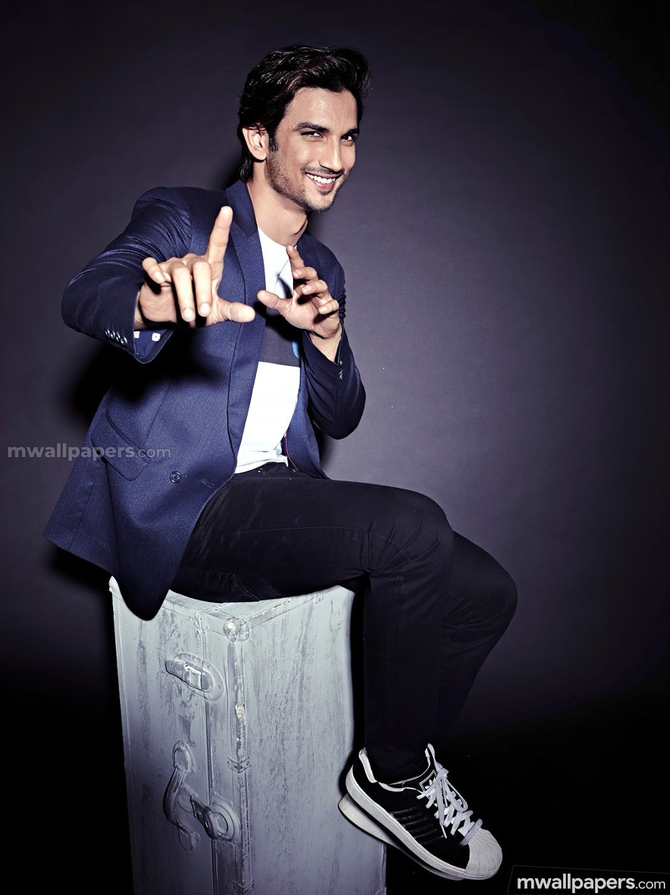
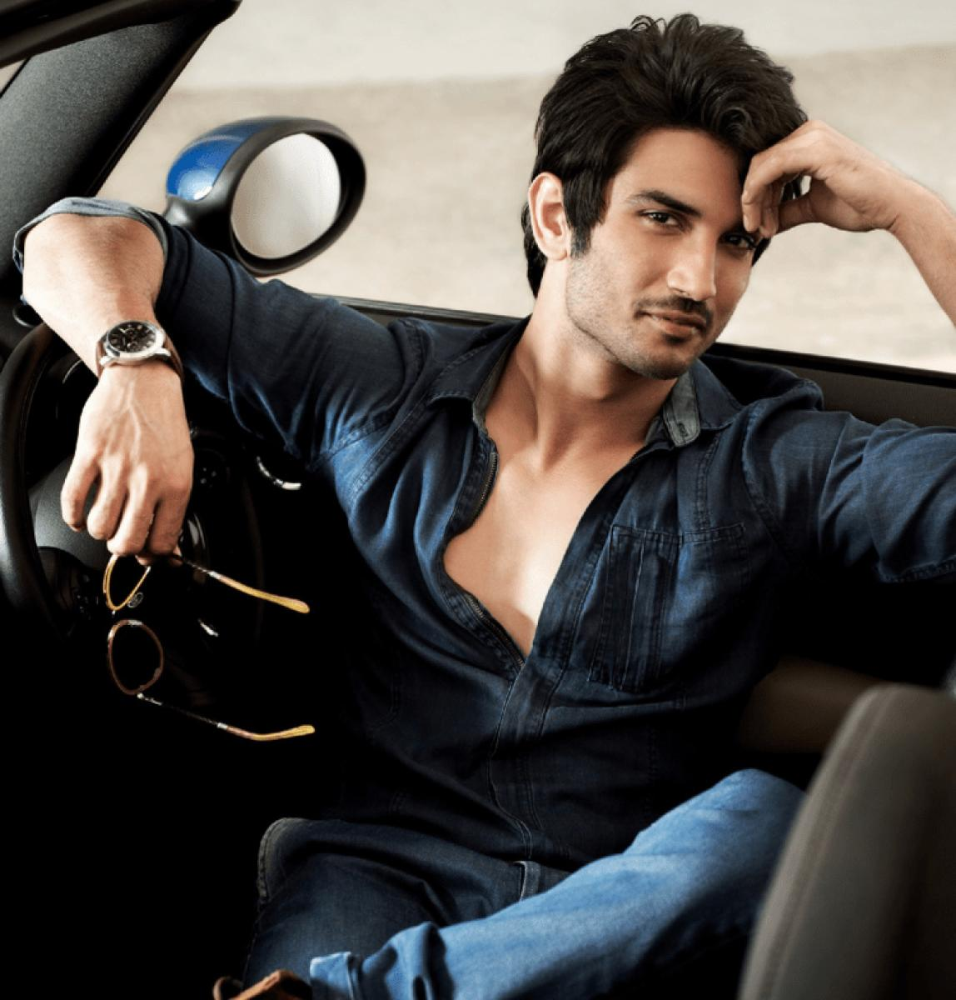
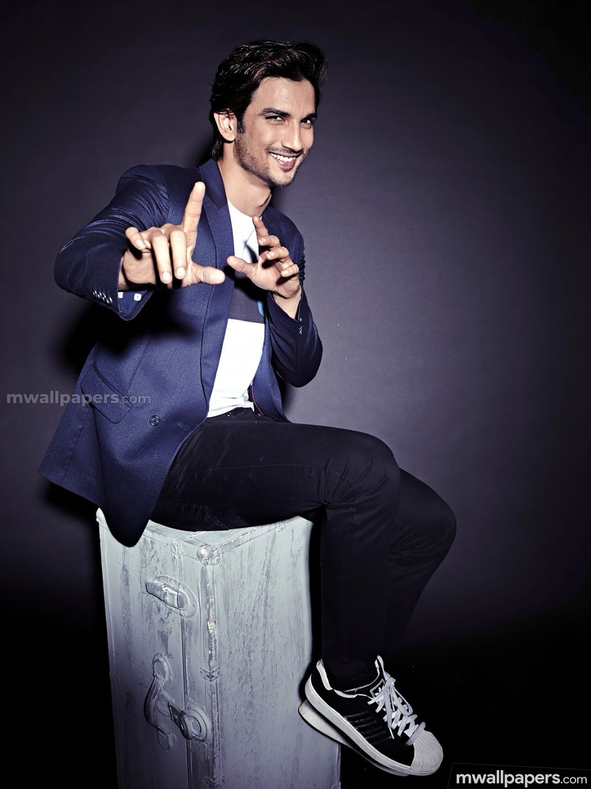
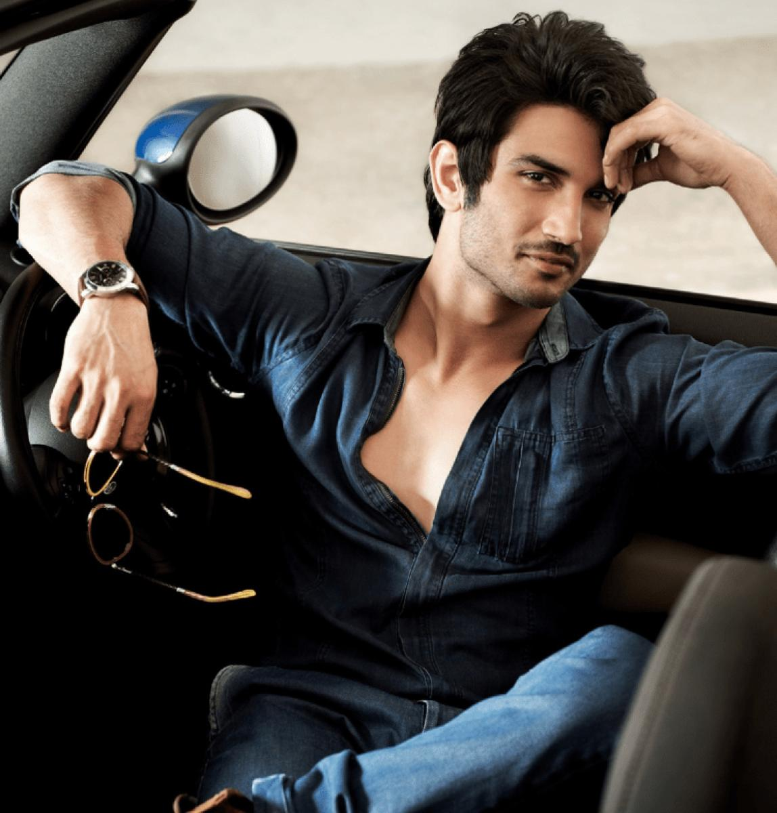
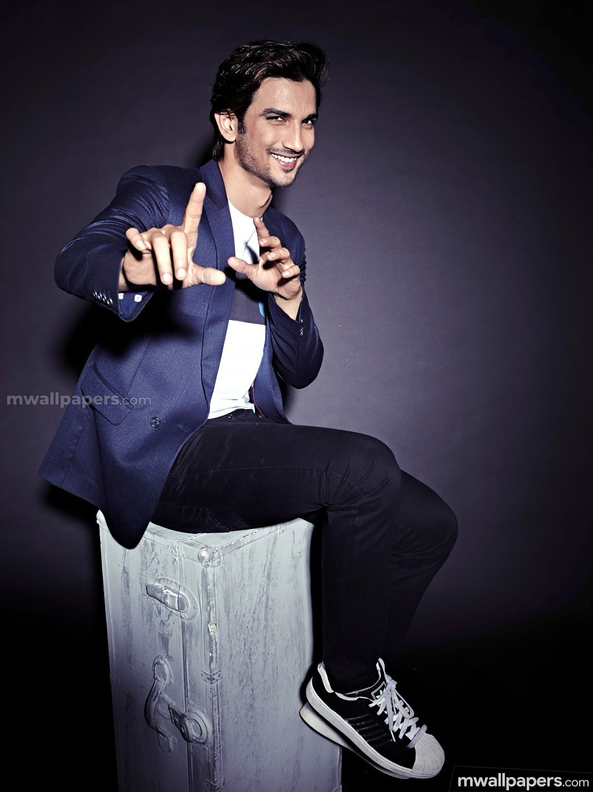
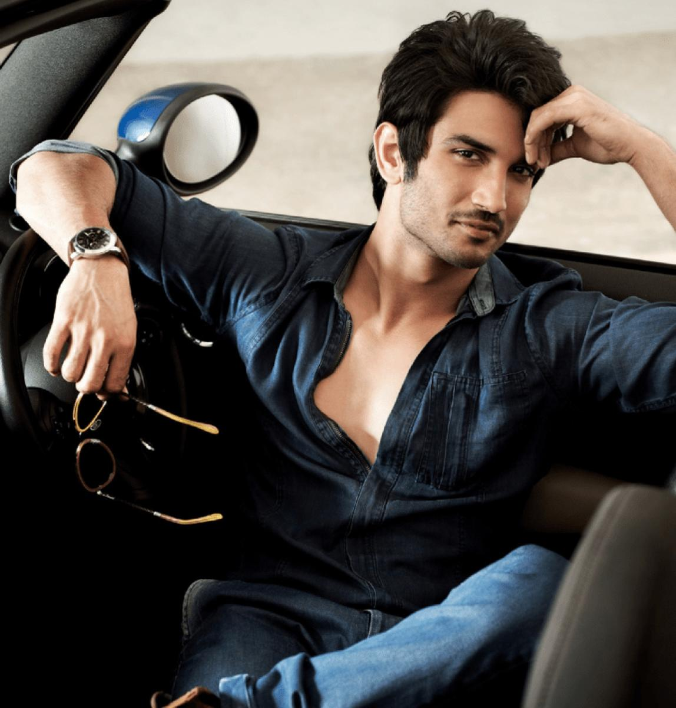
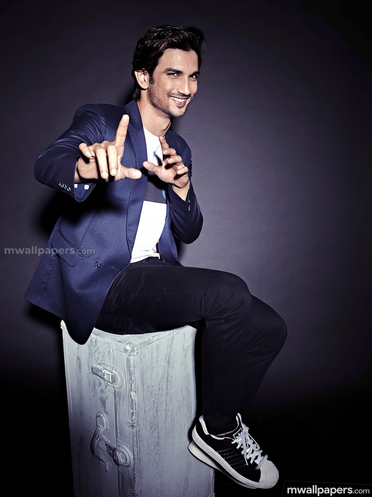
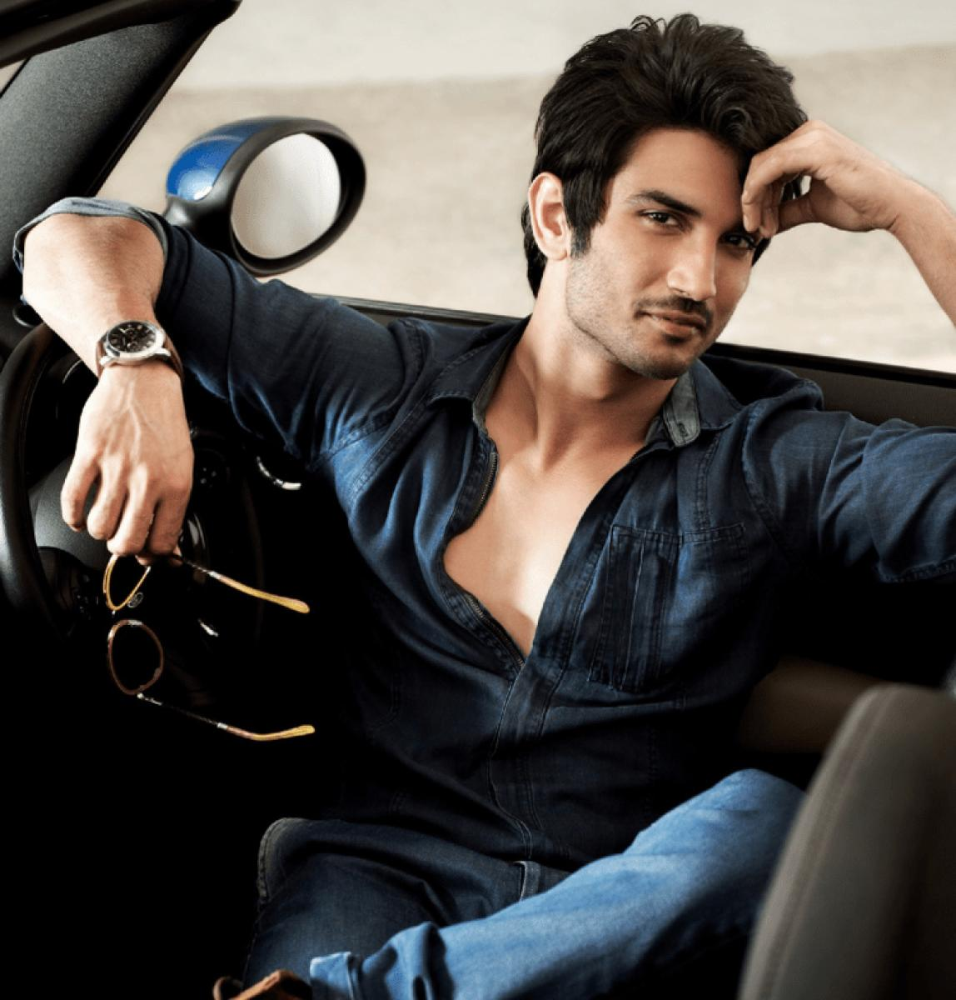

No matter what you achieve, what you want to aspire to be, or how famous and powerful you become
the most important thing is whether you are excited about each and every moment of your because
of your work and people around you
Sushant Singh Rajput (21 January 1986 – 14 June 2020)
Sushant Singh Rajput (21 January 1986 – 14 June 2020) was an Indian actor who is best known for his work in Hindi cinema. He starred in a number of commercially successful Bollywood films such as M.S. Dhoni: The Untold Story (2016), Kedarnath (2018) and Chhichhore (2019). Due to his contribution to the film industry, he received a Screen Award and was nominated for the Filmfare Awards on two occasions.
Rajput started his career after dropping out of his engineering course at the Delhi College of Engineering and entering the theatre industry in Mumbai. He moved on to feature in Hindi television serials, his debut show was the romantic drama Kis Desh Mein Hai Meraa Dil (2008), followed by the lead role in the soap opera Pavitra Rishta (2009–2011). He made his Bollywood debut in the film adaptation Kai Po Che! (2013) which became a commercial and critical success. Followed by his starring role in the romantic comedy Shuddh Desi Romance (2013) and the role of the titular detective in the action thriller Detective Byomkesh Bakshy! (2015).
He also starred in a number of other films such as the reincarnation drama Raabta (2017), the historical drama Sonchiriya (2019) and the action thriller Drive (2019). His highest-grossing releases came with a supporting role in the satire PK (2014), and from the titular role in the sports biopic of Mahendra Singh Dhoni. For his performance in the latter, he received his first nomination for the Filmfare Award for Best Actor and became the winning nomination at the Indian Film Festival of Melbourne. Apart from acting, he was the founder of a non profit organisation and has been credited as the co-founder of a technological startup.
On 14 June 2020, Rajput, aged 34, was found dead, hanging from the ceiling fan in his home in Bandra, Mumbai.He had reportedly shown signs of clinical depression and was suffering from bipolar disorder. The Mumbai Police commenced an investigation, stating that the death was being treated as a suicide. The postmortem report stated that the cause of death was "asphyxia due to hanging," and called it a "clear case of suicide." The autopsy doctors placed time of death at 10 to 12 hours before postmortem examination on 14 June at 11:30 p.m.—meaning between 11:30 a.m. and 1:30 p.m. (Indian Standard Time). No foul play was found.[185] The viscera report likewise ruled out foul play. On 25 July, Rajput's family lodged a first information report with police in Patna, where his father lives, accusing Rhea Chakraborty and five others of abetment of suicide.
On 19 August 2020, the Supreme Court of India allowed the Central Bureau of Investigation (CBI), the Indian national government's top investigating agency, to take control of the investigation and ordered the CBI to look into any future cases registered in relation to Rajput's death.[189] The CBI was later joined by the Enforcement Directorate and the Narcotics Control Bureau (NCB) to investigate the money laundering and drug peddling angles respectively.
On 8 September, Rhea Chakraborty was arrested by the NCB in a drug case linked to the investigation of the death probe. Prior to the arrest, 9 others were arrested by the NCB in the drug case including Rhea's brother, Showik Chakraborty.
On 3 October, Dr. Sudhir Gupta of All India Institute of Medical Sciences, New Delhi, leader of a forensic medical team tasked by CBI for assistance, said, "Sushant death is a case of suicide. Murder completely ruled out."[192] Gupta told Asian News International (ANI), "There were no injuries over the body other than hanging. There were no marks of struggle or scuffle in the body and clothes of the deceased." On 5 October, ANI reported that the AIIMS medical board had submitted its report to CBI confirming that Rajput died by suicide and ruling out the murder angle.On 15 October, the CBI said it "continues to investigate the death of Rajput. There are certain speculative reports in the media that the CBI has reached a conclusion. It may be reiterated that these reports are speculative and erroneous."
| Sno | Title | Year | Role |
|---|---|---|---|
| 1 | Kai Po Che! Shudh Desi Romance |
2013 | Ishan Bhatt Raghu Ram |
| 2 | PK | 2014 | Sarfaraz Yousuf |
| 3 | Detective Byomkesh Bakshy! | 2015 | Detective Byomkesh Bakshy |
| 4 | M.S. Dhoni: The Untold Story | 2016 | Mahendra Singh Dhoni |
| 5 | Raabta! | 2017 | Jilaan/Shiv Kakkar |
| 6 | Welcome to New York Kedarnath |
2018 |
Himself Mansoor Khan |
| 7 | Sonchiriya Chhichore Drive |
2019 | Lakhan Singh or Lakhna Aniruddh Pathak Samar |
| 8 | Dil Bechara | 2020 | Manny |
| Sno | Title | Year | Role |
|---|---|---|---|
| 1 | Kis Desh Mein Hai Meraa Dil | 2008–2009 | Preet Juneja |
| 2 | Pavitra Rishta | 2009–2011 | Manav Deshmukh |
| 3 | Zara Nachke Dikha | 2010 | Contestant |
| 4 | Jhalak Dikhhla Jaa 4 | 2010-2011 | Contestant |
| 5 | Pavitra Rishta | 2014 | Manav Deshmukh |
| 6 | CID | 2015 | Byomkesh Bakshy |